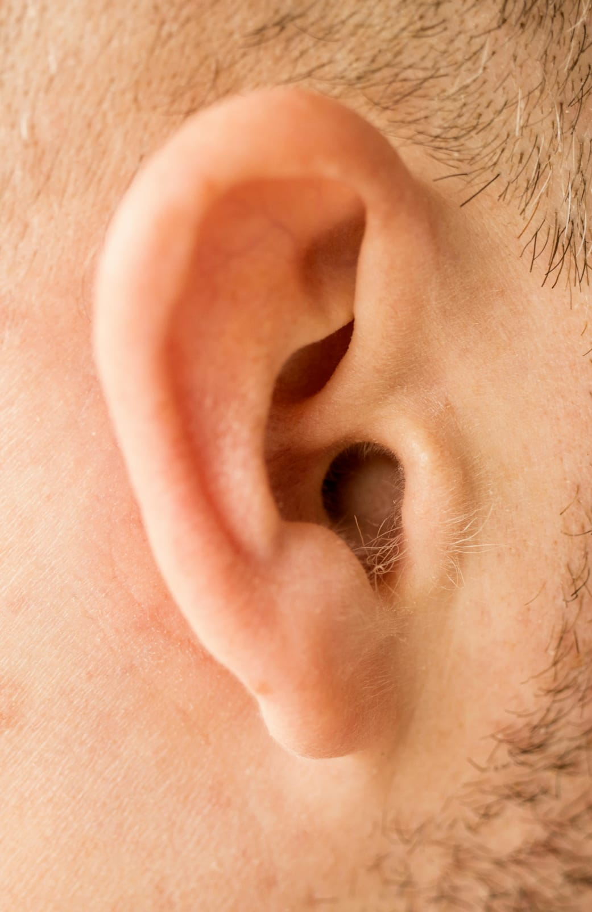

- Definición. El sistema auditivo humano permite la percepción del sonido, y la calidad del audio comprimido puede influir en la experiencia auditiva.
- Percepción del sonido. La forma en que percibimos el sonido está relacionada con la frecuencia y la amplitud, que son aspectos que se pueden alterar mediante la compresión.
- Calidad del audio. La compresión de audio debe ser cuidadosa para no afectar negativamente la calidad que el oído humano puede percibir.
- Algoritmos y psicoacústica. Muchos algoritmos de compresión utilizan principios de psicoacústica para determinar qué datos de audio pueden ser eliminados sin que el oyente lo note.
- Implicaciones en la salud auditiva. La compresión inadecuada puede resultar en una experiencia auditiva degradada, afectando la salud auditiva a largo plazo.